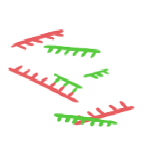

About

PhD student in the Nielsen Lab at UC Berkeley. I graduated from Seoul National University with a BS in Earth and Life Sciences, along with a minor in Statistics. My research interests span both empirical and theoretical questions in population genetics and phylogenetics.
Education
University of California, Berkeley
Aug. 2025 ~ Present: PhD Student, Department of Integrative Biology
Seoul National University
Mar. 2018 ~ Feb. 2025: BSc, Earth Science Education, Biological Sciences (Double major), Statistics (Minor)
(Apr. 2019 ~ Feb. 2021: Mandatory military service)
Publications
Lim, W. (2025). Diversification dynamics of the Mesozoic ostracod family Cyprideidae Martin, 1940. Palaeontologia Electronica.